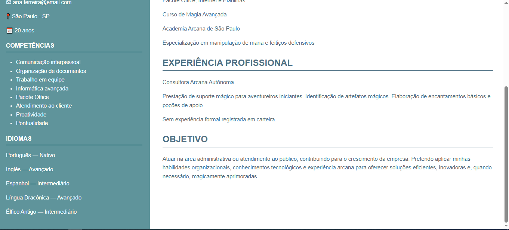

Email profissional: juxi1213@gmail.com
Telefone: 97021-3744
WhatsApp: 97021-3744
Sou a Júlia Ximenes, estudante da ETEC de Cidade Tiradentes, cursando o primeiro ano médio técnico em desenvolvimento de sistemas. As áreas que eu tenho mais habilidades são em Front-End (HTML e CSS) e um pouco na área de Back-End com Java.
Esse projeto era para fazer um curriculo ficticio, onde colocariamos apenas CSS HTML, utilazando uma referência, de um modelo pronto para nós basearmos. Esse trabalho foi dado pelos professores do curso de desenvolvimento de sistemas, e nele tinha que ter uma alta criatividade com o CSS e um bom desenpenho no HTML. Foi realizado com a ajuda de: Lucas de Oliveira
